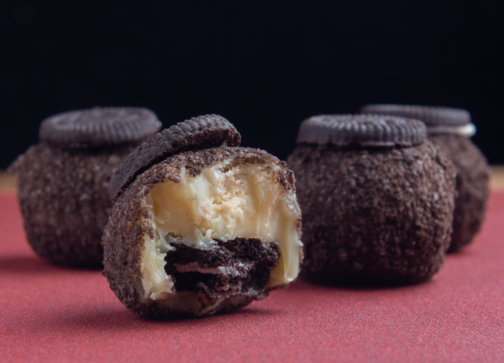
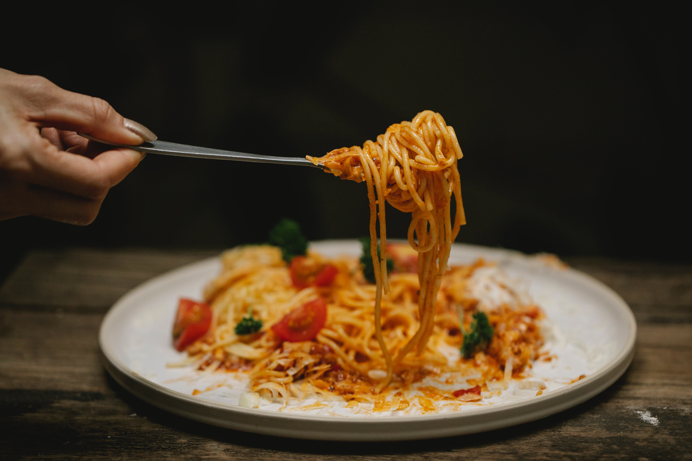
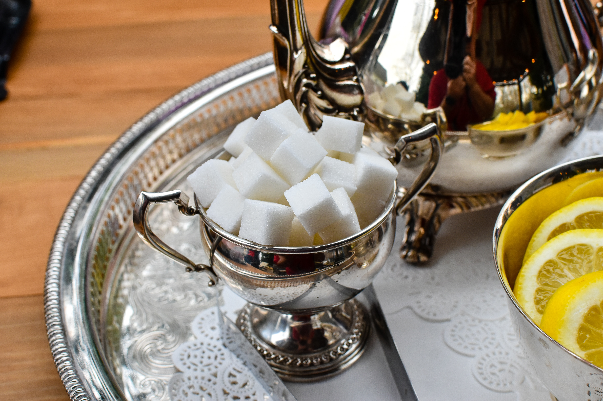

Why Savory is better than Sweet
Jenifer's Argument
Savory is the best flavor because a large majority of fried and grilled food is savory.

Salt is a universal food seasoning, as it is accepted by all tastes.

Sweet food can get nauseating easily. This is not an issue with most savory foods.
Because savory food doesn't usually get nauseating, people are able to enjoy it in larger quantities.
Savory food is healthier than sweet food because people use less salt than sugar.
